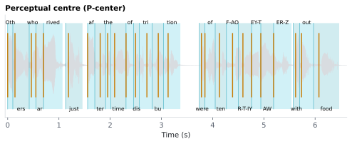

6.3.5Perceptual centre (P-center)
Perceptual onset of each syllable — the time point listeners perceive as the syllable's "beat" — rather than the physical acoustic onset.
6.3.5.1What it is
Perceptual onset of each syllable — the time point listeners perceive as the syllable's "beat" — rather than the physical acoustic onset. Scott's (Scott 1993) formula, originally from Marcus 1981:
P_Center = nucleus_onset − k · onset_consonant_duration
Where:
nucleus_onset= onset time of the syllable's vowel — the first phone in the phoneme CSV whoseStressis not empty. ⚠️ Note the polarity:Stress == 0is an unstressed vowel and counts as a nucleus; only an emptyStressmeans "not a vowel".onset_consonant_duration= total duration of the consonant(s) preceding the vowel.k= an empirical coefficient (default 0.3, configurable on the Sub-word features → P-center card).
A syllable like "strike" (S T R AY1 K) has a long consonant onset;
its physical Onset (start of /s/) is earlier than its P_Center
(near the vowel /AY/). A syllable like "oh" (OW1) has no
preceding consonants, so P_Center ≈ Onset.
Where it falls. When the onset consonants run straight up to the
vowel, onset_consonant_duration = nucleus_onset − Onset, so the formula
becomes
P_Center = Onset + (1 − k) · (nucleus_onset − Onset)
— with the default k = 0.3, 70 % of the way from the start of the
syllable to the start of its vowel. So the P-center always sits at or
after the syllable's Onset and before its vowel: at the very start for a
syllable that begins with its vowel (oh, in), and just before the vowel
for one that begins with consonants — in food (F UW1 D), 70 % of the way
through the /f/. A P-center just ahead of the vowel is therefore what the
formula intends, not an alignment error.
Stored to 4 decimal places, in seconds from audio start. PUNCT and
unaligned syllables → NaN.
6.3.5.2See it

6.3.5.3In your output
| token | Label | Onset seconds | End seconds | P_Center seconds |
|---|---|---|---|---|
| Others | Oth | 0 | 0.1 | 0 |
| Others | ers | 0.1 | 0.42 | 0.142 |
| who | who | 0.42 | 0.55 | 0.462 |
| arrived | ar | 0.55 | 0.7 | 0.55 |
| arrived | rived | 0.7 | 1.07 | 0.7 |
| just | just | 1.13 | 1.46 | 1.186 |
| after | af | 1.56 | 1.7 | 1.56 |
| after | ter | 1.7 | 1.91 | 1.805 |
| the | the | 1.91 | 2.01 | 1.952 |
| time | time | 2.01 | 2.31 | 2.087 |
| of | of | 2.31 | 2.46 | 2.31 |
| distribution | dis | 2.46 | 2.57 | 2.495 |
6.3.5.4MATLAB
% Load the syllable-level table (one row per syllable)
T = readtable('syllable/LJ002-0321_syllables.csv', 'TextType', 'string');
T.Properties.VariableNames % every column in the file
head(T(:, {'token', 'Label', 'Onset', 'End', 'P_Center'}), 10) % this feature's columns (first rows)
% Plot
ok = ~isnan(T.Onset);
plot([T.Onset(ok) T.End(ok)]', [1 1], 'LineWidth', 6); hold on
xline(T.P_Center(~isnan(T.P_Center)), 'Color', [.78 .48 0]) % one line per P-center
xlabel('Time (s)')
6.3.5.5Configuration
The k coefficient is configurable on the Sub-word features → P-center
card (Sub-word features → P-center → "k coefficient (0–1)" spinbox)
and as prosody.pcenter_k in config/features.yaml. Default 0.3 matches the
Scott 1993 original. Higher k pulls the P-centre earlier (toward
the syllable onset); k=0 collapses P_Center to nucleus_onset.
6.3.5.6In the code
Source: sensi/extractors/pcenter.py:add_pcenter
What the code does:
- Sorts the phoneme DataFrame by
(doc_id, sentence_id, token_in_sentence_id, syllable_id, phoneme_id). - For each syllable, identifies the first phone whose
Stressvalue is present (Stress.notna()) — the vowel nucleus. - Computes
P_Center = vowel.Onset − k · Σ(consonants_before.Duration), rounded to 4 decimal places. - If no vowel nucleus is found (extremely rare; only happens for
malformed syllables), the syllable's physical
Onsetis used as fallback. - PUNCT / unaligned syllables →
NaN.
Why:
- k = 0.3 default — the original Scott 1993 empirically derived value for English speech. Configurable for studies that want a different weighting.
- Vowel-nucleus identification by presence of stress — the ARPABET
convention is that every vowel carries a stress digit and no consonant
does (CMUdict), so "has a stress value" is a clean
vowel discriminator. The pipeline stores that digit in a nullable
Stresscolumn, so the test isStress.notna()— and an unstressed vowel (Stress == 0) is correctly still a nucleus. Anoov_unresolvedspnrow has no stress, so such a syllable takes the fallback in step 4. - Fallback to physical Onset — preserves a usable value for the rare malformed-syllable case so the column doesn't sprinkle NaN unexpectedly.
6.3.5.7Library
The implementation is pure pandas / numpy — no third-party library beyond the ARPABET data already provided by MFA.
6.3.5.8EEG rationale
The perceptual centre is the right anchor for rhythm-related analyses of speech (Scott 1998, Villing 2011). Whereas physical syllable onsets vary with consonant cluster length (an /st/ onset is longer than an /n/ onset), perceptual centres are quasi-isochronous in connected speech — they're what listeners synchronize to when tapping along.
For EEG specifically:
- Cortical envelope tracking: acoustic landmarks like the sharpness of temporal envelope fluctuations drive delta/theta cortical oscillations and support perceptual parsing of speech (Doelling 2014). P-centres formalise a specific class of such landmarks at the syllable grain.
- In any analysis where the question is "when does the listener
perceive this syllable to start?",
P_Centeris the answer;Onsetanswers "when did the audio waveform start for this syllable" — a different question (Villing 2011).
6.3.5.9Papers
- Marcus 1981 Marcus. Acoustic determinants of perceptual center (P-center) location. Perception & Psychophysics 30(3), 247–256. doi:10.3758/BF03214280 — first formalisation of P-centre offset from physical onset.
- Scott 1993 Scott. Recognition of an Auditory Pattern Based on Time Marked by a Perceptual Centre. PhD thesis, University College London. — the linear formula with empirical
k = 0.3for English. - Scott 1998 Scott. The point of P-centres. Psychological Research 61, 4–11. doi:10.1007/PL00008162
- Villing 2011 Villing, Repp, Ward, Timoney. Measuring perceptual centers using the phase correction response. Attention, Perception, & Psychophysics 73(5), 1614–1629. doi:10.3758/s13414-011-0110-1 — modern P-centre measurement validation.
- Doelling 2014 Doelling, Arnal, Ghitza, Poeppel. Acoustic landmarks drive delta–theta oscillations to enable speech comprehension by facilitating perceptual parsing. NeuroImage 85, 761–768. doi:10.1016/j.neuroimage.2013.06.035 — sharpness of temporal envelope fluctuations cues syllabic rate and drives delta-theta cortical tracking.